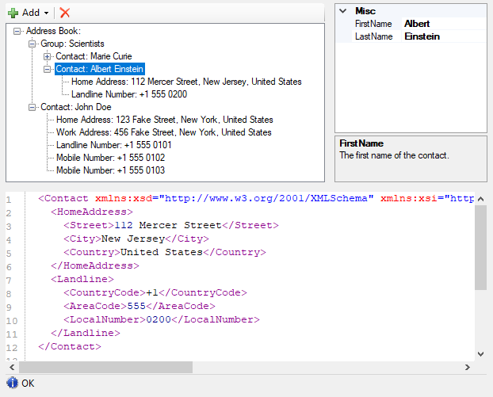

- Generated by
 1.9.1
1.9.1
|
NanoByte Structure Editor
0.4.6
WinForms library for building split-screen editors for data structures
|
NanoByte Structure Editor is a WinForms library that helps you build split-screen editors for your data structures, consisting of:
PropertyGrid or custom) andThis allows you to create an IDE-like experience for your users when editing complex domain specific languages, configuration files, etc..

Add a reference to the NanoByte.StructureEditor.WinForms NuGet package to your project. It is available for .NET Framework 2.0+.
Create an instance of StructureEditor<T> and add it to your Form:
Alternatively, you may want to derive your own class from StructureEditor<T>. This will allow you to use the graphical WinForms designer in Visual Studio (which does not support generic types) to place the Editor on your Form.
You need to "describe" your data structure to the Editor. You can do this directly after instantiating the editor or in the constructor of your derived class.
TContainer exposed by another property. You can use multiple calls with different type parameters to describe arbitrarily deep hierarchies. The fluent API provides the following methods:
.AddProperty() describes a simple value property..AddPlainList() describes a non-polymorphic list..AddList() describes a polymorphic list. After calling it you need to chain .AddElement() calls for each specific type of element the list can hold.There are numerous overloads for each of these methods, e.g., allowing you to specify a custom editor control for a data type or to keep the auto-generated one.
Use the Open() method to load an XML file into the editor:
Use the Save() method on the CommandManager property to save the editor's content as an XML file:
Take a look a the sample project for a more complete setup, including undo/redo functionality.